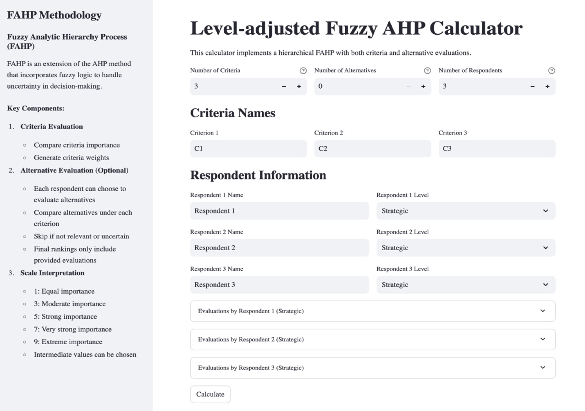
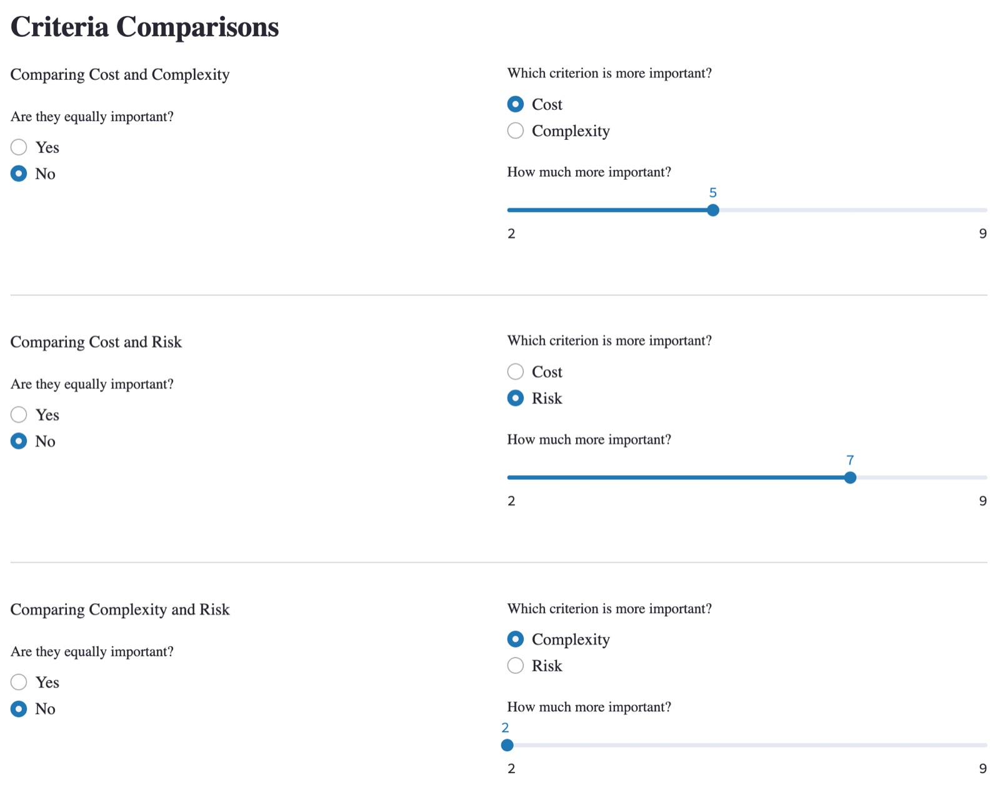
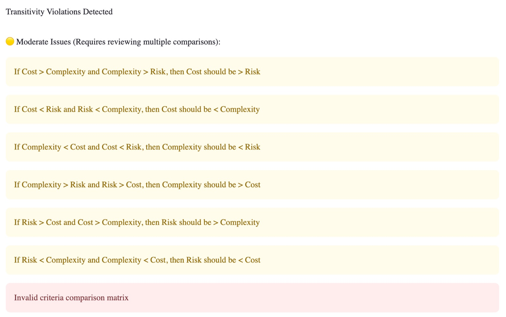
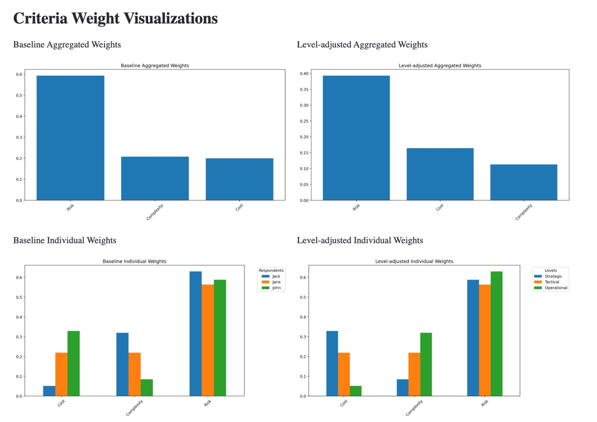
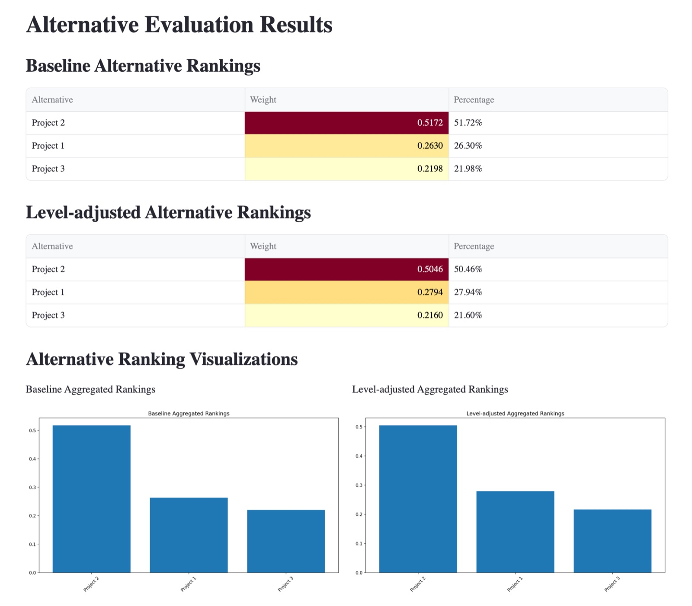

Visit
Download FAHP-L on GitHub
The project
Choosing a supplier, prioritizing projects, deciding where to invest: strategic decisions involve several criteria at once and depend on people's judgment. Fuzzy AHP is one of the most widely used methods for structuring this kind of choice. Criteria and alternatives are compared in pairs, and the judgments, which are never exact, are handled with fuzzy numbers, suited to the imprecision of answers such as "slightly more important" or "much more important".
The traditional method, however, treats all answers as if they were worth the same. In a study with directors, managers and operational staff, the opinion of those who know the organization's strategy carries the same weight as that of those who see it from a distance. When there are few experts and many operational-level respondents, the result can become distorted.
FAHP-L (L for level) solves this problem. Each respondent is identified as strategic, tactical or operational. Answers from the strategic level serve as the reference, and those from the tactical and operational levels are adjusted proportionally according to how close they are to that reference or how far they depart from it. The app delivers two results side by side: the traditional Fuzzy AHP result and the level-adjusted one. This way the researcher sees not only which option won, but also whose opinions carried weight.
The adjustment came from practice. It had already been done by hand in published studies on resistance to change in information technology implementation, outsourcing in the public sector and decisions in agribusiness. Doing it in spreadsheets was slow and error-prone. The app also came from the classroom: in a multicriteria decision analysis course in the graduate program in Business Administration, students learn the methods by doing the calculations by hand, and once they master the logic they need a tool that performs the calculations reliably in their dissertations and theses.
The app was presented as a technical-technological product (PTT) at EnANPAD 2025, with the paper FAHP-L: A Level-Adjusted Fuzzy AHP App for Strategic Decision Modeling in Management Research, published in the ANPAD proceedings.
Decision-making
Models strategic decisions with several criteria and alternatives, handling the imprecision of human judgment.
02Strategy
Recognizes that hierarchy matters: those at the strategic level have a view of the decision that the other levels lack.
03Teaching and research
Turns a calculation that used to be done by hand into an app for students, researchers and managers, with no programming needed.






How to use it
- Criteria and alternatives
The user defines up to 10 criteria and up to 10 alternatives. If there are no alternatives, the app calculates only the criteria weights.
- Respondents and their levels
Each respondent is given a name and a level: strategic, tactical or operational. The level determines how their answers will be adjusted.
- Pairwise comparisons
Each respondent compares the criteria with one another and, optionally, the alternatives within each criterion, using buttons and sliders.
- Consistency check
Each comparison matrix is checked on the spot. Logical contradictions are flagged with suggested corrections, with no need to start over.
- Results
With one click, the app calculates the weights and the ranking using Chang's extent analysis method, in both models, with color-coded tables and charts.
- Export
All results go into an Excel spreadsheet, with separate tabs for weights, rankings and details of each model, to document and reproduce the analysis.
Who it is for
For researchers and graduate students who use multicriteria methods, especially when few experts are available or when they sit at different levels of the organization. And for public managers, consultants and nonprofit organizations that need to prioritize projects, choose suppliers or allocate resources while hearing from people at various levels. Its use goes beyond strategy: governance, operations, public policy and innovation management are fields where complex decisions involve actors with different degrees of authority.
The code is open and free: anyone can download, use and adapt the app for research and teaching from the GitHub repository. It runs on the user's own computer, with the interface open in the browser. Using it requires no programming skills, and the app stores no personal data: the files it generates stay with the user.
To cite the app: Martins, F. S. (2025). Level-adjusted enhanced Fuzzy AHP calculator [Software]. https://github.com/fellipemartins/Enhanced-Fuzzy-AHP-Calculator
Next steps
- Custom weights
Let the researcher define the level-adjustment rules, instead of using the current fixed proportions.
- Sensitivity and robustness
Simulate how much the result changes when the judgments vary.
- Consensus
A module to support consensus building in group decisions.
- Online data collection
A version with respondent login, to administer the questionnaire remotely in larger studies.
- The reasons behind the choices
Integration with qualitative tools, to record why each respondent made the comparisons they did.
Innovation stage
FAHP-L is currently in phase 3: the app works, its code is open to the public, it has already been used in research and in the classroom and it has been reviewed at a scientific meeting. The goal is to reach phase 4, with the new features and regular use by researchers and organizations outside the lab.
- 01Ideation and concept
Problem-solution fit, initial value proposition, first market estimate.
TRL 1–2 · IRL 1–2 - 02Pre-seed and validation
Low-fidelity prototypes, conversations with potential users, competitor analysis.
TRL 3–4 · IRL 3–4 - Today03Seed and MVP
Minimum viable product launched, first users and real pilots.
TRL 5–6 · IRL 5–6 - Target04Early growth
Proven product-market fit, repeatable model, predictable costs.
TRL 7–8 · IRL 7–8 - 05Scale
High-volume operation, optimized channels, geographic expansion.
TRL 9 · IRL 9 - 06Maturity
Established market position, predictable revenue, corporate governance.
Continuous innovation
Classification based on the Unified Concept-to-Market Innovation Taxonomy. TRL is the technology readiness level and IRL, the investment readiness level.